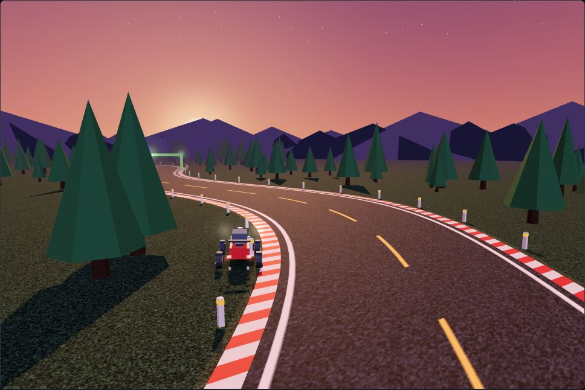
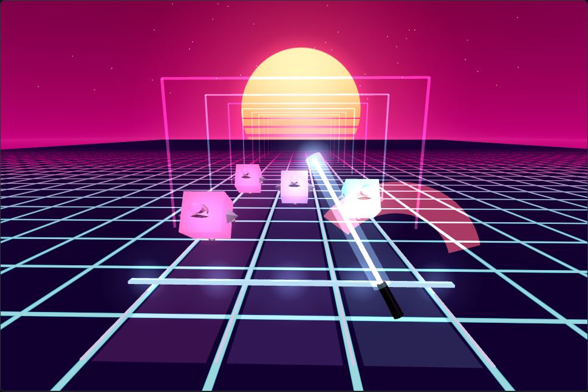
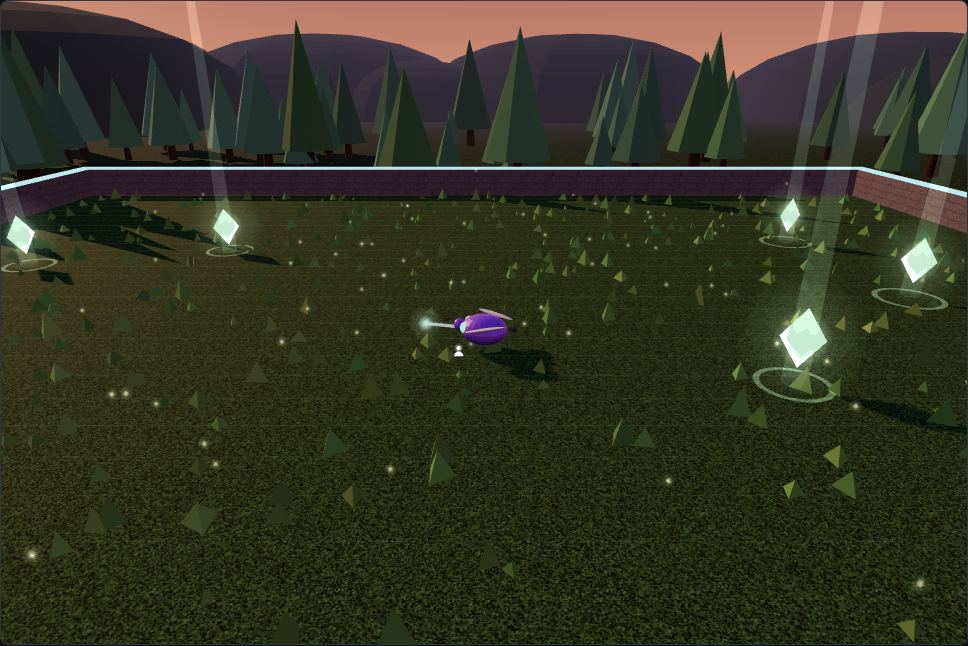

A neural network seeded from a curated Drosophila escape/leg-motor connectome learns to play three small 3D games via REINFORCE. Every game is AI-only: you watch, fast-forward and reset — the fly drives.

▶ WATCHSteer a car along a winding dusk highway. Checkpoints score; crashes end the episode.

▶ WATCHSlash glowing notes on the beat across three lanes, to a generated metronome track.

▶ WATCHFree-roam a twilight meadow and forage for glowing crystals — the fly learns to hunt them down.